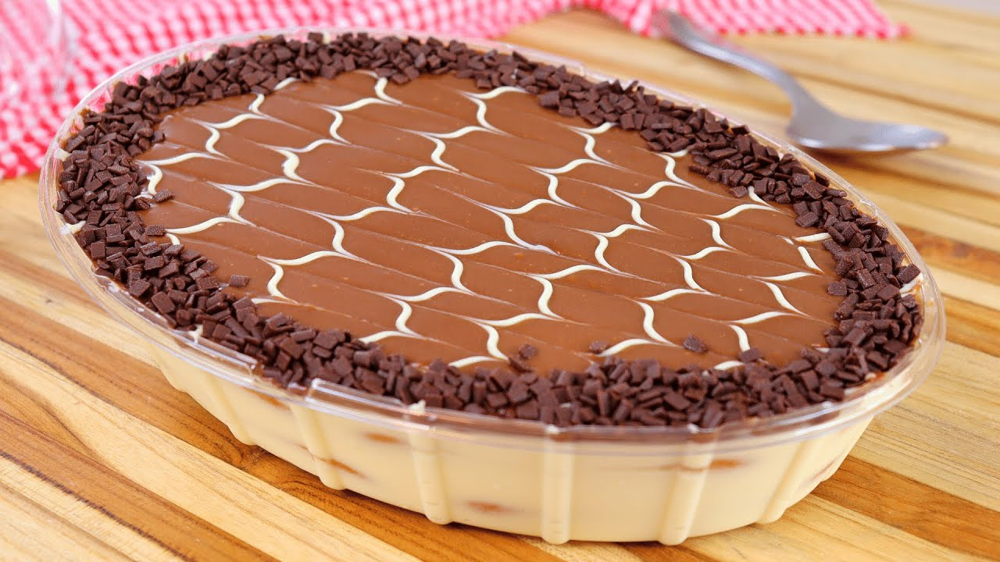

Pavê

Descrição
Com camadas delicadas e irresistíveis, este doce é uma escolha sublime para quem busca uma experiência gastronômica única. A simplicidade na preparação desse pavê torna-o uma opção ideal para adoçar momentos especiais.
Com ingredientes básicos como biscoitos tipo maisena, creme de leite, leite condensado e, é claro, o ingrediente estrela, o chocolate, você criará uma sobremesa que despertará suspiros à mesa.
Ingredientes
- 1 pacote de bolacha maisena
- 1/2 copo de leite
- 1 colher (sobremesa) de chocolate em pó
Creme Branco
- 1 lata de leite condensado
- 1 lata de leite de vaca (use a medida da lata de leite condensado)
- 1 colher (sobremesa) de amido de milho
- 2 gemas
Creme de Chocolate
- 1 lata de leite condensado
- 1 lata de leite de vaca (a medida da lata de leite condensado)
- 1 colher (sobremesa) de amido de milho
- 2 gemas
- 4 colheres de chocolate em pó
Cobertura
- 4 claras
- 4 colheres de açúcar
- 1 lata de creme de leite sem soro
Modo de preparo
- Em uma tigela, misture o leite e o chocolate em pó até que esteja completamente dissolvido.
- Molhe as bolachas no leite e reserve.
Creme branco
- Em uma panela, leve todos os ingredientes ao fogo médio e misture até obter uma consistência grossa e cremosa.
Creme de chocolate
- Repita o processo feito no creme branco
Cobertura
- Bata as claras em neve com o açúcar até obter um creme consistente, adicione o creme de leite e misture delicadamente.
Montagem
- Em um refratário grande, despeje o creme branco, metade das bolachas, creme de chocolate, bolachas e claras em neve.
- Repita o processo até preencher todo o refratário e leve à geladeira por 40 minutos.